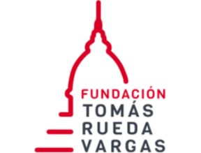
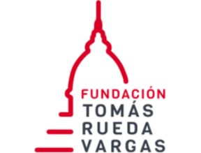

Aliados estratégicos
Dona aquí

Pronto podrás donar por este medio al Fondo de Becas de la Universidad El Bosque y así ayudar a jóvenes colombianos a cumplir su sueño de la educación superior.
Vigilada Mineducación
 
